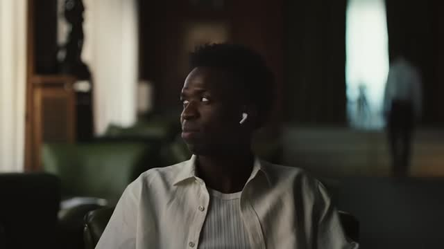
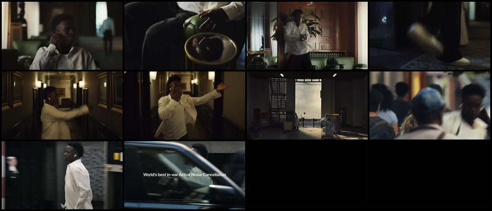
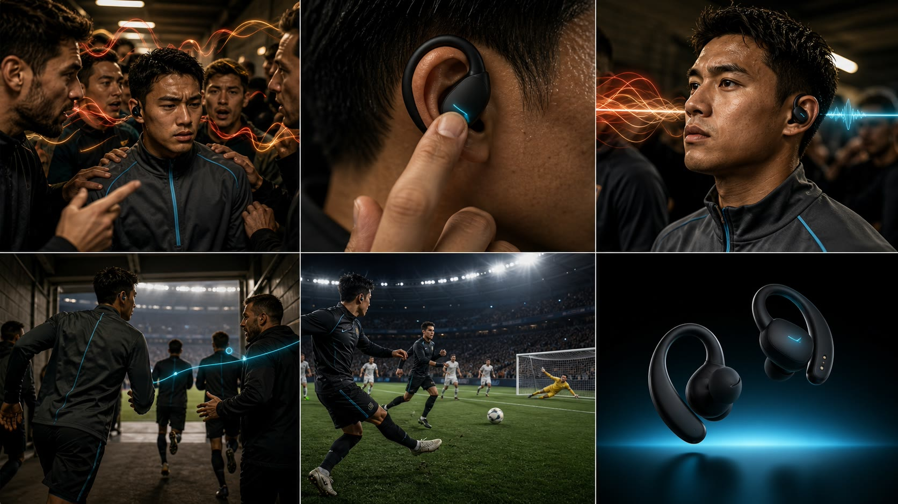

01ONE-TIME
一次性拆解层
参考片 → 可复核证据
探测、抽帧、故事板、时间戳和镜头功能。把“感觉很好”转换成有位置的观察事实。
- 需要
- 参考视频
- 留下
- 证据与结构
01 / STRUCTURE TRANSFER
点击六个节拍，同时查看原片证据、Skill 提取出的叙事机制，以及迁移后的新镜头。方向键也可切换。

人物转头，耳机轮廓清晰出现；还没有文案，观众先看到“触发物”。
HOOK / PRODUCT TRIGGER
开场不是罗列参数，而是先建立“使用前 → 触发 → 使用后”的因果入口。
保留佩戴动作 + 即时感知变化
替换明星 / 酒店 → 虚构球员 / 球员通道
赛前通道里，教练与队友的声音化成暖色声波；他还没能跟上节奏。
本节无性能宣称。只建立问题与触发动作，不凭空补充翻译准确率、延迟或支持语言数。
02 / EVIDENCE → CONCEPT
左侧来自上游抽帧器的 12 帧时间样本；右侧是依据六段约束生成的概念分镜。它展示“怎么拍”，不是冒充已经生成的视频。


TARGET FILM
赛前听不懂 → 轻触设备 → 混乱收束 → 理解战术 → 团队同步 → 产品定格。视觉连续性锚点是同一球员、石墨训练服、电光青缝线与黑色挂耳设备。
下载完整 Prompt + 分段计划03 / ABLATION
多模态分析模型本来就能理解视频，视频生成模型也能根据提示词出镜头。Skill 的研究价值不是替代任何模型，而是固定两者之间的证据、结构、商品事实与交付格式。
“做一条像 AirPods 广告一样酷的运动耳机视频：运动员戴耳机、炫酷转场、最后展示产品。”
FORMAT 35 秒，16:9，电影级运动科技广告；画面内不生成文字。
ANCHOR 同一虚构球员；石墨训练服；青色缝线；黑色挂耳设备。
CAUSE 多语言压力 → 触碰耳机 → 单一清晰语义流 → 协作恢复。
PROOF 用跑位、传球与团队同步表现理解结果，不用 UI 代替故事。
CLAIM 【经法务确认的翻译延迟】/【支持语言数】只在后期叠字。
AVOID Apple 标识、白色耳机柄、名人肖像、虚构性能与乱码。04 / WHAT ACTUALLY RAN
上游仓库固定在提交 e143d2a。本次把完整原片仅放在临时研究目录，调用其抽帧脚本得到可追溯证据，再由 Skill 规则完成语义迁移。
识别 35.061 秒、1280×720、23.976 fps。
以 2 fps 采样 70 帧，并导出音轨。
生成 12 帧故事板、接触表与时间戳 Manifest。
标注剧情功能、保留机制、替换元素和宣称状态。
交付主提示词、分段生成计划和后期文案。
RESEARCH & RIGHTS BOUNDARY
本页保留镜头功能、节奏关系、因果链和证明方式。
本页替换人物、场景、产品造型、品牌系统、音乐与文案。
研究前提Relay Arc 及其实时翻译能力均为虚构概念；迁移到真实产品时，核心功能、触发行为、适用环境和全部参数都必须核验。
交付边界当前是生产架构与概念分镜，不是最终 MP4，也没有调用付费视频生成 API。
{kind=link}